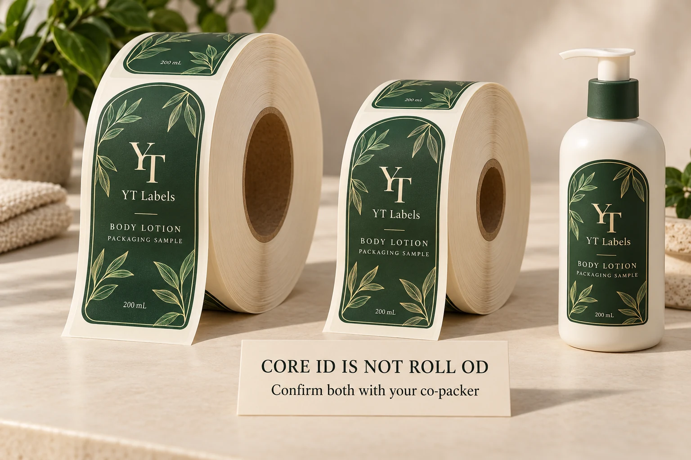

Get the specification from the line that will use it
If a contract manufacturer will apply your cosmetic labels, ask its production team for the current roll requirements before the printer finalizes the job. Include the applicator model and any relevant unwind or sensor configuration.
An old purchase order can help start the conversation. It should not silently become the specification for a different filling site or labeling line.
HERMA’s published eco specifications, for example, separately identify roll diameter, core diameter, label dimensions and sensing options. Those are equipment-specific details. A familiar core size does not establish that every other part of the roll is suitable. HERMA eco technical specifications.
Keep one dated specification attached to the quote. Name the co-packer contact who confirmed it and identify which production line it covers.
Specify both winding and the leading artwork edge
“Outside wound” answers where the printed labels sit on the roll. It does not, on its own, tell the printer which edge of your design should enter the machine first.
The Label-Aire unwind chart distinguishes inside and outside winding, together with the leading edge of the design. Use an agreed chart or a marked photograph, then add a plain-language description that matches it.
A direction number without its diagram leaves the receiving team to interpret a convention. I would send the actual artwork with its top, bottom, left and right clearly identified, and ask the operator to confirm the required feed orientation.
For a front-and-back bottle set, confirm each label’s delivery arrangement. Do not assume two separate rolls and an alternating front/back web are interchangeable. Ask what the specific line expects and have the printer quote that arrangement.
This discussion belongs after the decision to use rolls. If that decision is still open, start with our roll-versus-sheet label guide.
Keep core ID and roll OD in different boxes
Core inside diameter is the opening that fits onto the holder. Roll outside diameter is the diameter of the wound supply. They describe different boundaries, so write them as separate fields with units.
A count such as “1,000 labels per roll” does not replace the maximum outside diameter. Label length in the feed direction, the gap, construction thickness and core all affect the resulting roll build.
For a concrete equipment example, Afinia’s XL unwinder manual specifies a fixed 3-inch internal diameter and a maximum 250 mm external roll diameter. Those values describe that unit, not a default specification for your co-packer. Afinia XL unwinder manual.
Ask the printer to confirm the proposed count within the agreed physical limits. If the order requires several smaller rolls, make that visible in the quotation before comparing unit prices.

Define the web, not only the sticker
The finished label width is not necessarily the full backing-web width. The line also receives the liner margins and the gap between successive labels.
Use a simple drawing to distinguish across-web width from feed-direction length. Then ask the co-packer to confirm the permitted web width, gap, liner requirements and any sensing provisions. The printer can translate those requirements into the manufacturing specification.
Clear labels deserve an explicit sensing discussion. HERMA lists a sensor option for transparent labels on the eco applicator. That supports a practical question about the installed equipment; it does not mean every labeling line detects every clear construction automatically.
A material change can therefore affect more than appearance. If a brand moves from an opaque label to clear film, bring the operator into the review rather than approving the change only from a bottle render.
Decide how the rolls will be received and used
Consider two hypothetical buyers.
A small brand is labeling presentation samples by hand. Several manageable rolls may suit the bench, and an elaborate machine specification may add little to that immediate task.
A second brand is shipping labels directly to an OEM for a scheduled lotion run. Its receiving team needs to identify each artwork version, check the roll build and route the right labels to the right job. That buyer has a reason to spend more time on the handoff.
For the OEM order, agree how each roll and carton will be identified: product, artwork revision, quantity and the relevant purchase-order reference. Ask about permitted splices, partial rolls, leader or trailer requirements and how exceptions should be marked. These are questions for agreement, not universal allowances.
The larger roll is not automatically the economical one. Compare any extra converting cost with the co-packer’s actual handling and changeover requirements. Without those conditions, “fewer roll changes” is a sales argument rather than a complete purchasing decision.
Arrange a relevant trial and record what it covers
When a new roll construction or delivery arrangement needs evaluation, agree the trial with the co-packer before releasing the full order. Use the proposed material, liner and roll arrangement, with the intended bottle where application is being assessed.
Have the operator record what was checked and any remaining conditions. A loose label can help review print appearance; it cannot demonstrate how a production roll feeds through a particular line.
Keep the approvals connected but distinct. Artwork approval, roll-build confirmation and application evaluation answer different questions. A trial should not become a vague “sample approved” email that nobody can interpret when the next shipment arrives.
Send one brief that the printer can quote
Your handoff should include:
- Bottle photos or drawings, label dimensions and quantity per artwork version.
- Applicator model, production site and the operator-confirmed roll specification.
- Core inside diameter, maximum roll outside diameter and agreed roll count.
- Inside/outside winding plus a diagram showing the leading design edge.
- Web width, feed length, gap, liner and relevant sensing requirements.
- Roll identification, splice and partial-roll instructions, plus any agreed trial.
For custom cosmetic bottle labels, send those details with the artwork and required destination. The custom label buying guide covers the wider material and quotation brief.
Use the YT Labels inquiry form to prepare the message, then attach the co-packer’s specification and artwork when sending it by email or WhatsApp.
The green can still be adjusted. First, give the receiving operator a roll specification they recognize.